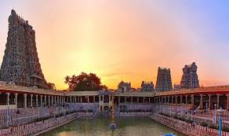
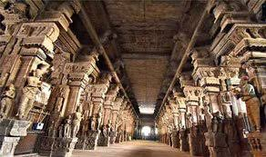
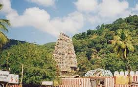
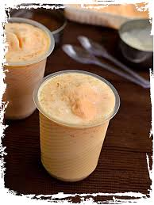
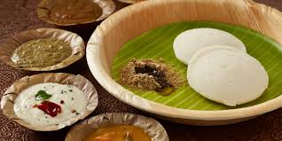
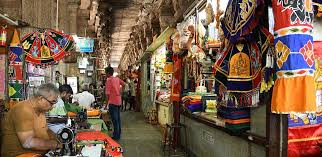
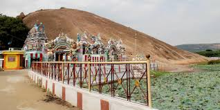

Culture & Heritage

Meenakshi Amman Temple
Ancient, awe-inspiring temple central to Madurai’s cultural life.
Best time: Early morning, avoid festival crowds.
Access: Walkable from city center.
Best time: Early morning, avoid festival crowds.
Access: Walkable from city center.
Gandhi Memorial Museum
Museum housing exhibits on India’s freedom struggle and Gandhi’s life.
Best time: 10 AM–1 PM or 2–5:30 PM.
Access: 3 km from Meenakshi Temple, city bus or auto.
Best time: 10 AM–1 PM or 2–5:30 PM.
Access: 3 km from Meenakshi Temple, city bus or auto.

Puthu Mandapam Mandapa
Historic pillared hall for temple festivities, shopping, and art.
Best time: Morning hours.
Access: Opposite Meenakshi Temple.
Best time: Morning hours.
Access: Opposite Meenakshi Temple.
Places to Visit
Thirumalai Nayakar Mahal
Grand palace with spectacular pillars, light and sound show.
Time: 9 AM – 5 PM.
Access: 2 km from city center, by auto or bus.
Time: 9 AM – 5 PM.
Access: 2 km from city center, by auto or bus.

Koodal Azhagar Temple
Historic Vishnu temple with intricate carvings.
Time: 5:30AM–12PM, 4–9PM.
Access: 1.5 km from Meenakshi Temple.
Time: 5:30AM–12PM, 4–9PM.
Access: 1.5 km from Meenakshi Temple.
Vandiyur Mariamman Teppakulam
Massive temple tank famous for the Float Festival held annually.
Time: Open all day, best at sunrise or sunset.
Access: 4 km from city center, accessible by local bus, auto, or cab.
Time: Open all day, best at sunrise or sunset.
Access: 4 km from city center, accessible by local bus, auto, or cab.
Food to Enjoy

Jigarthanda
Local cold dessert made of milk, almond gum, sarsaparilla syrup.
Best time: Afternoons.
Get it: Famous Jigarthanda stalls near Vilakkuthoon.
Best time: Afternoons.
Get it: Famous Jigarthanda stalls near Vilakkuthoon.
Kari Dosa
Spicy dosa topped with minced meat, a breakfast favorite.
Best place: Konar Mess, morning hours.
Best place: Konar Mess, morning hours.

Murugan Idli
Famous soft idli, variety of chutneys and sambar.
Best time: Early breakfast or dinner.
Get it: Murugan Idli Shop, main streets.
Best time: Early breakfast or dinner.
Get it: Murugan Idli Shop, main streets.
Things to Do

Puthu Mandapam Market
Bustling market for bangles, fabrics, temple crafts.
Open: 8:30 AM – 8 PM.
Location: Opp. Meenakshi Temple.
Open: 8:30 AM – 8 PM.
Location: Opp. Meenakshi Temple.

Samanar Hills
Hillock with carvings, caves, city views.
Go: Sunset for panoramic scenes.
Reach: By auto, 8 km from city center.
Go: Sunset for panoramic scenes.
Reach: By auto, 8 km from city center.
Vaigai River Walk
Riverside stroll, views, and photo spots along Vaigai riverbank.
Best time: Evenings.
Location: Near Goripalayam area.
Best time: Evenings.
Location: Near Goripalayam area.